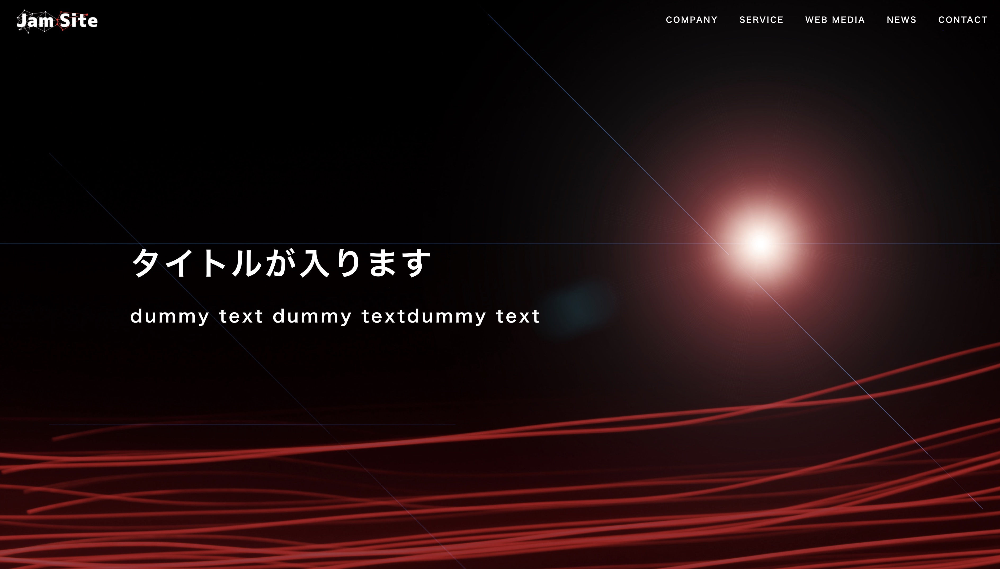

Works
web Site /
web application.
S眼科クリニック
- 開発言語
- HTML / SASS / JavaScript
- CMS
- WordPress
- リンク
- S渋谷眼科クリニック
- 説明
- LPのコーディングを担当させていただきました。wordpressサイト内の固定ページとして構築し、予約システムプラグインの導入、簡単なアニメーションを実装しています。PCサイズ以下ではリサイズした時にフォントや要素が可変するリキッドレイアウト、PC幅以上では要素幅を固定するソリッドレイアウトでコーディングさせていただきました。ブレイクポイントは一箇所設定しています。 制作期間は二日間です。
S眼科クリニック
- 開発言語
- HTML / SASS / JavaScript
- CMS
- WordPress
- リンク
- S渋谷眼科クリニック
- 説明
- LPのコーディングを担当させていただきました。wordpressサイト内の固定ページとして構築し、予約システムプラグインの導入、簡単なアニメーションを実装しています。PCサイズ以下ではリサイズした時にフォントや要素が可変するリキッドレイアウト、PC幅以上では要素幅を固定するソリッドレイアウトでコーディングさせていただきました。ブレイクポイントは一箇所設定しています。 制作期間は二日間です。
Simple Memo
- 開発言語
- PHP / Laravel
- インフラ
- AWS EC2
- リンク
- Simple Memo
- 説明
- laravelを使用してメモアプリを開発しました。メモに紐付いた検索機能、画像の添付、削除機能を実装しています。 開発後はAWSのEC2にデプロイし、インフラにはnginx、mysqlを使用しています。
jam-site
- 開発言語
- HTML / SASS / JavaScript
- ライブラリ / フレームワーク
- vue.js / nuxt.js
- リンク
- jam-site
- 説明
- Nuxt.JsとmicroCMSを使用して、Jamstack構成のコーポレートサイトを製作しました。ホスティングにはfirebase hostingを使用しています。News、Memberなどの複数の項目にmicroCMSで作成したデータをVew側でAPI経由で取得、表示しています。Wordpressのような記事の一覧ページ、記事の詳細ページのような動的なページも作成しています。
